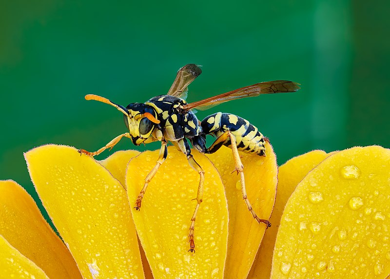
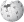
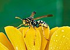

{kind=link}
{kind=link}
{kind=link}
{kind=link}
{kind=link}
{kind=link}
{kind=link}
{kind=link}

{kind=link}
Size of this preview: 800 × 571 pixels. Other resolutions: 320 × 229 pixels | 640 × 457 pixels | 1,024 × 731 pixels | 1,280 × 914 pixels | 2,560 × 1,828 pixels | 4,300 × 3,071 pixels.
{kind=link}
{kind=link}
{kind=link}
{kind=link}
{kind=link}
{kind=link}
Original file (4,300 × 3,071 pixels, file size: 4.14 MB, MIME type: image/jpeg)
| This is a file from the Wikimedia Commons. Information from its description page there is shown below. Commons is a freely licensed media file repository. You can help. |
{kind=link}
| This is a featured picture, which means that members of the community have identified it as one of the finest images on the English Wikipedia, adding significantly to its accompanying article. If you have a different image of similar quality, be sure to upload it using the proper free license tag, add it to a relevant article, and nominate it. |
{kind=link}
|  | This image was selected as picture of the day on the English Wikipedia for October 1, 2023. |
{kind=link}
Summary
| Description |
English: Polistes dominula male (identified by Leopoldo Castro) Deutsch: Feldwespe (Polistes dominula ♂) auf Blütenblättern |
||||||
| Date | |||||||
| Source | Own work | ||||||
| Author | Ermell | ||||||
| Permission (Reusing this file) |
|
{kind=link}
{kind=link}
{kind=link}
{kind=link}
{kind=link}
|
{kind=link}
{kind=link}
This image has been assessed using the Quality image guidelines and is considered a Quality image.
|
Licensing
Reinhold Möller, the copyright holder of this work, hereby publishes it under the following license:
This file is licensed under the Creative Commons Attribution-Share Alike 4.0 International license.
Attribution: Reinhold Möller
- You are free:
- to share – to copy, distribute and transmit the work
- to remix – to adapt the work
- Under the following conditions:
- attribution – You must give appropriate credit, provide a link to the license, and indicate if changes were made. You may do so in any reasonable manner, but not in any way that suggests the licensor endorses you or your use.
- share alike – If you remix, transform, or build upon the material, you must distribute your contributions under the same or compatible license as the original.
File history
Click on a date/time to view the file as it appeared at that time.
| Date/Time | Thumbnail | Dimensions | User | Comment | |
|---|---|---|---|---|---|
| current | 22:51, 8 November 2020 |  | 4,300 × 3,071 (4.14 MB) | Ermell | Uploaded with LrMediaWiki 0.8.0, LR 10.0 Win |
File usage
More than 100 pages use this file. The following list shows the first 100 pages that use this file only. A full list is available.
{kind=link}
- User:4v4l0n42/Today
- User:Afterword/pretty
- User:AlMac
- User:Allard
- User:Alxt
- User:AnOddName
- User:Andrejj
- User:Archer1742
- User:Bannus
- User:Bayerischermann
- User:BlankVerse/Admin candidates
- User:Cactus.man
- User:Cassidy McGurk
- User:CatherineMunro
- User:Chaos Reaver
- User:Chaosfeary
- User:CincinnatiWiki/Templates
- User:Cowboycaleb
- User:D C McJonathan
- User:DarthVader
- User:Defunkt/old
- User:Ekespe
- User:Eloquence/Tour 01
- User:Encephalon/Main
- User:Evolauxia
- User:Fadookie
- User:Fang Aili
- User:Flyhighplato
- User:Fornadan
- User:Galactor213
- User:Gtdp
- User:Hellinterface
- User:Itai
- User:J. Finkelstein/Old page
- User:Jcrwiki~enwiki
- User:Jdhowens90
- User:Jmccabe871
- User:JonMoore/Main Page
- User:Judgesurreal777/Central hub
- User:Kerowyn
- User:Kinhull
- User:LEC20/Daily Diversions
- User:MDM
- User:MarSch/Main body
- User:MarSch/Main page
- User:MattTM
- User:Mitternacht90
- User:Mulad/portal
- User:Nickg331
- User:Palapala
- User:Persian Poet Gal
- User:Pjf
- User:Przepla
- User:Quentin Smith/Shadow Main Page
- User:RaptorX
- User:Rfl
- User:Richss
- User:Rodsan18
- User:SCLamont
- User:SMC
- User:Sid007
- User:Siroxo/main page draft
- User:Slgrandson
- User:Sommers
- User:Spliffy
- User:Straal
- User:Texture
- User:Thetorpedodog/xptablefree
- User:Thomas27
- User:Titoxd
- User:Tlogmer
- User:Tomruen
- User:Trevj
- User:Trumpetboy8282
- User:U-Two
- User:Veyklevar
- User:Vincent7
- User:WadeSimMiser
- User:Wcquidditch
- User:Wikipedian231
- User:Witan
- User:Zaui
- User:Zorblek
- User talk:Bluejay Young
- User talk:Guty~enwiki
- User talk:JoJan
- User talk:JoJan/Archive 2
- User talk:Sillydragon
- Wikipedia:Main Page alternatives/(Italian-style)
- Wikipedia:Main Page alternatives/(blue boy)
- Wikipedia:Main Page alternatives/(executive)
- Wikipedia:Main Page alternatives/(misty breeze)
- Wikipedia:Main Page alternatives/(regal)
- Wikipedia:Main Page alternatives/(shades of blue)
- Wikipedia:Main Page alternatives/(simple layout)
- Wikipedia:Template index/User namespace
- Wikipedia:WikiProject Usability/Main Page
- Wikipedia:WikiProject Usability/Main Page/Draft 0
- Wikipedia:WikiProject Usability/Main Page/Draft L
- Wikipedia:WikiProject Usability/Main Page/Draft NOW
View more links to this file.
Global file usage
The following other wikis use this file:
- Usage on bn.wikipedia.org
- Usage on fr.wikipedia.org
- Usage on species.wikimedia.org
- Usage on sv.wikipedia.org
{kind=link}